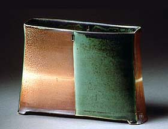

| Maren Kloppmann
American studio potter
German-born
American studio potter Maren
Kloppmann began her career as an apprentice in Germany,
earning a Journeyman Diploma from the Ceramic Guild (Keramik Handwerkskammer)
in 1984. She remained the USA after having worked as an apprentice
with another German ceramist in Iowa.
 Kloppman
then studied at the Penland School of Crafts from 1984-86. She discovered
salt-glazing in 1986, at the same time turning her attention to
sculpture and sculptural vessels. She studied at the KCAI under
Ken Ferguson,
graduating with a BFA in 1993 and under Mark Ferris at the University
of Minnesota, earning an MFA in 1996. Kloppman
then studied at the Penland School of Crafts from 1984-86. She discovered
salt-glazing in 1986, at the same time turning her attention to
sculpture and sculptural vessels. She studied at the KCAI under
Ken Ferguson,
graduating with a BFA in 1993 and under Mark Ferris at the University
of Minnesota, earning an MFA in 1996.
Kloppman taught at the University of Wisconsin-River Falls from
1999-2002. She was awarded a McKnight Artist Fellowship in 2002-2003.
 She
makes slab and coil-built sculptural vessels and boxes in stoneware
and porcelain, juxtapositioning terra sigillata with glazes, in
combination with salt and soda-glazing. She
makes slab and coil-built sculptural vessels and boxes in stoneware
and porcelain, juxtapositioning terra sigillata with glazes, in
combination with salt and soda-glazing.
Her work has gained recognition beyond national borders. In 2004,
Kloppman was one of the main international demonstrators at the
'ClayModern' International Ceramics Festival in Gulgong, Australia.
Amongst her influences, Kloppman cites Constantin
Brancusi (1876-1957),
Isamu Noguchi (1904-88), Ruth
Duckworth and the ancient architecture of the American Southwest.
Kloppman lives and works in Minneapolis, Minnesota.
More Artists of the Week
More Articles
|